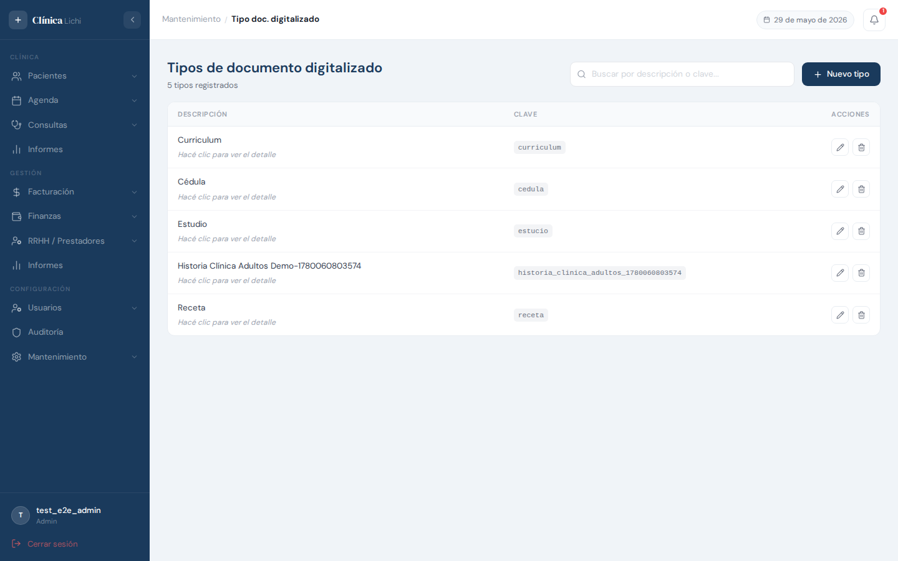
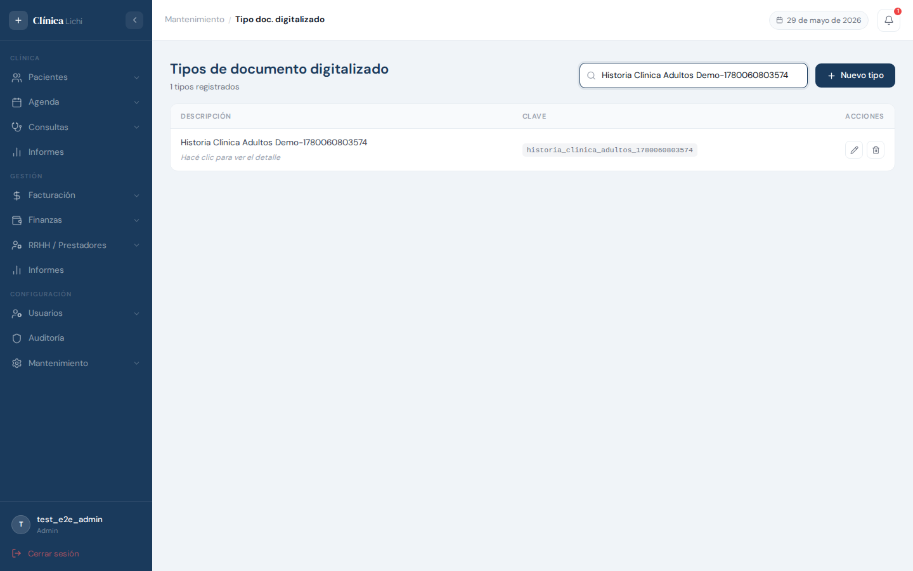
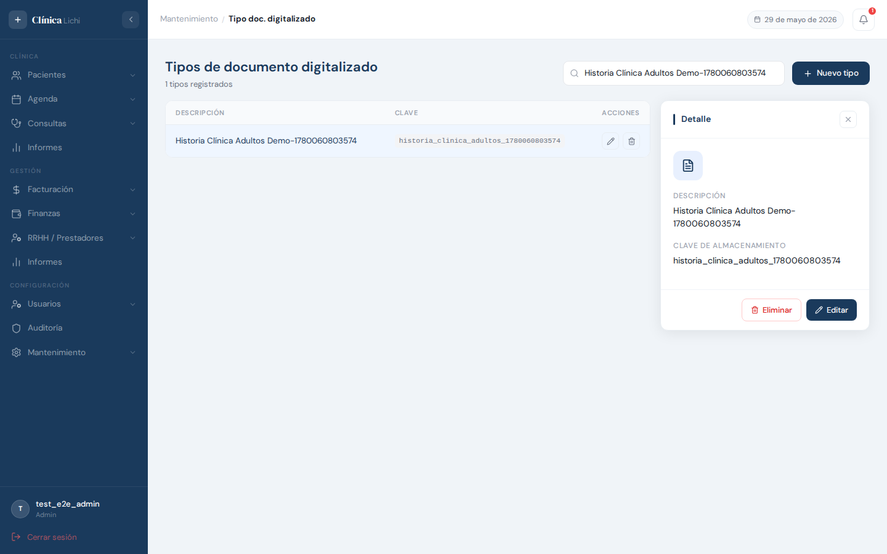
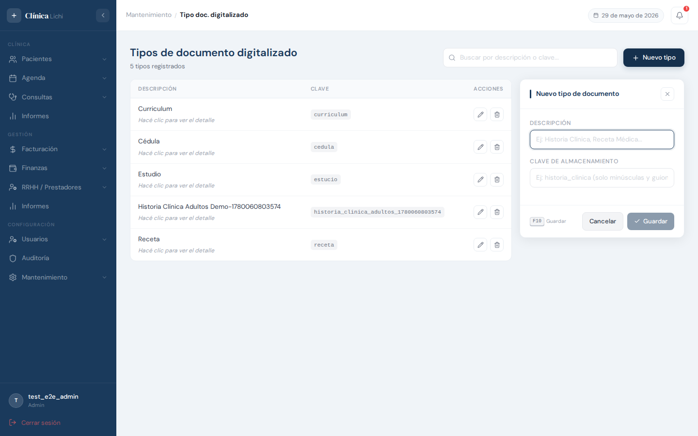
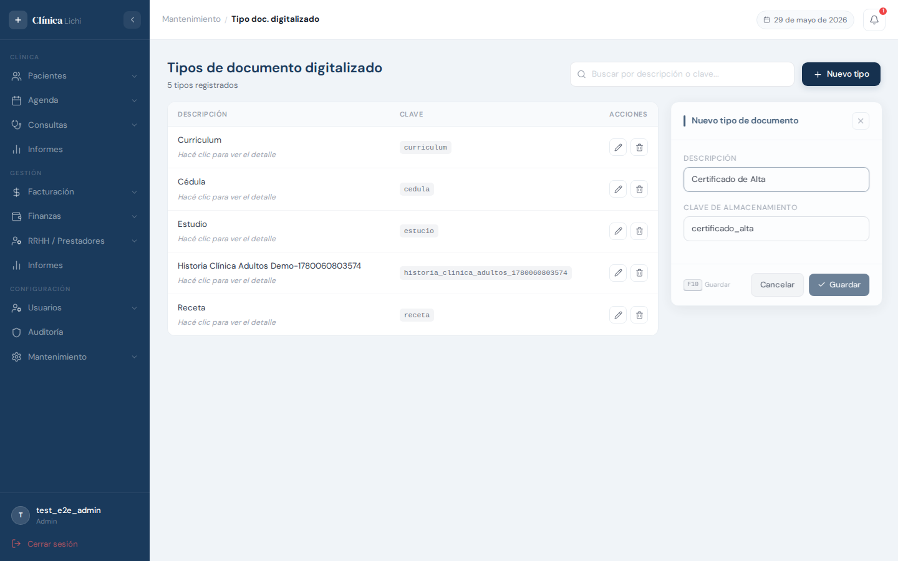
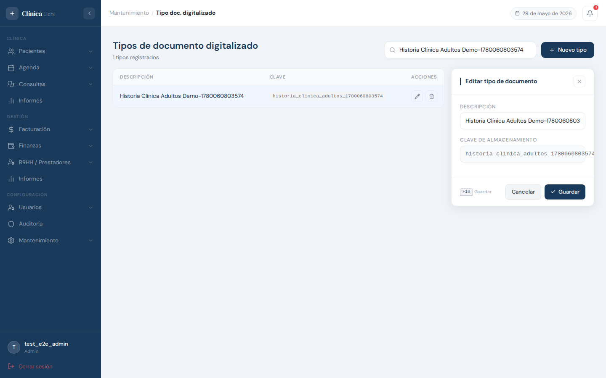
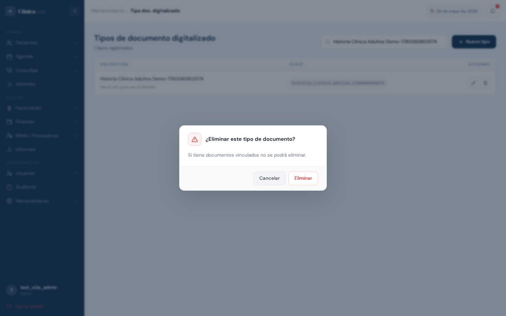
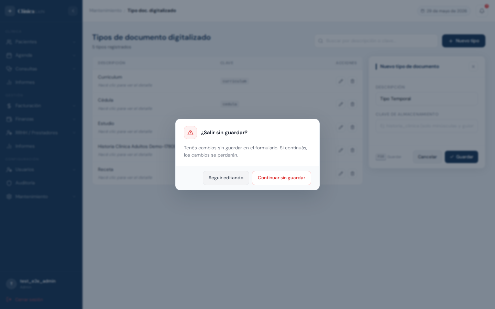

Descripción del módulo
El módulo Tipos de Documento Digitalizado permite registrar y administrar las categorías bajo las cuales se archivan los documentos clínicos digitalizados de la clínica. Cada tipo define un nombre visible para el usuario y una clave de almacenamiento interna que determina la ruta física donde se guardan los archivos en el servidor.
Ejemplos de tipos: Historia Clínica, Receta Médica, Consentimiento Informado, Informe Radiológico. Al subir un documento a la ficha de un paciente o de un prestador, el usuario selecciona el tipo correspondiente de este catálogo.
| Acción | Administrador | Recepcionista |
|---|---|---|
| Ver listado y detalle | ✅ | ✅ |
| Crear tipo de documento | ✅ | ✅ |
| Editar descripción | ✅ | ✅ |
| Eliminar tipo de documento | ✅ | 🚫 |
Acceder al módulo
En el menú lateral izquierdo, expandí la sección Mantenimiento y hacé clic en Tipo doc. digitalizado.
Pantalla principal — listado
Al ingresar se muestra una tabla con todos los tipos activos, ordenados alfabéticamente por descripción. La columna Clave muestra el identificador técnico de almacenamiento en formato monoespaciado.

Columnas de la tabla
| Columna | Descripción |
|---|---|
| Descripción | Nombre legible del tipo de documento. Debajo aparece el hint "Hacé clic para ver el detalle" en filas no seleccionadas. |
| Clave | Identificador técnico en formato slug (minúsculas y guiones bajos). Define la carpeta de almacenamiento de los archivos. No se puede cambiar una vez creado. |
| Acciones |
Editar — abre el panel en modo edición
Eliminar — abre el diálogo de confirmación (solo Administrador)
|
Buscar un tipo de documento
El campo de búsqueda filtra la tabla en tiempo real. A diferencia de otros módulos, la búsqueda funciona tanto por descripción como por clave de almacenamiento.

| Comportamiento | Detalle |
|---|---|
| Por descripción | Filtra por el nombre del tipo de documento (sin distinción de mayúsculas). |
| Por clave | También filtra por storage_key. Útil para localizar un tipo cuando se conoce su identificador técnico. |
| Sin resultados | Muestra el mensaje "Sin tipos de documento registrados" con ícono. |
| Limpiar | Borrá el texto del campo para restaurar el listado completo. |
Ver detalle de un tipo
Hacé clic en cualquier parte de una fila (excepto en los botones de acciones) para abrir el panel lateral con los datos completos en modo lectura.

El panel de detalle muestra:
- Ícono de documento en el encabezado del panel
- Descripción: el nombre legible del tipo
- Clave de almacenamiento: el identificador técnico en formato slug
Para cerrar el panel hacé clic en la X del encabezado.
Crear un tipo de documento
Hacé clic en + Nuevo tipo en la esquina superior derecha (o presioná Insert cuando el panel esté cerrado).

Pasos para crear
- Hacé clic en + Nuevo tipo o presioná Insert. El panel lateral aparece con el título "Nuevo tipo de documento".
- Completá el campo Descripción * con el nombre visible del tipo. Ej:
Historia Clínica,Receta Médica. - Completá el campo Clave de almacenamiento * con un identificador en formato slug: solo minúsculas, números y guiones bajos. Ej:
historia_clinica,receta_medica. El sistema normaliza automáticamente a minúsculas si ingresás mayúsculas. - Hacé clic en Guardar o presioná F10.
- El panel se cierra y el nuevo tipo aparece en la tabla ordenado alfabéticamente. Se muestra una notificación verde de confirmación.

Editar un tipo de documento
Podés editar la descripción de un tipo desde el ícono de lápiz en la fila o desde el botón Editar dentro del panel de detalle.

Pasos para editar
- Pasá el cursor sobre la fila y hacé clic en ✏️, o abrí el detalle y hacé clic en Editar.
- El panel muestra el formulario de edición. La Descripción es editable; la Clave de almacenamiento aparece como texto con el badge No editable — no se puede modificar.
- Modificá la descripción.
- Hacé clic en Guardar o presioná F10.
- El panel vuelve al modo lectura con el dato actualizado. Se muestra una notificación verde.
Eliminar un tipo de documento
Eliminar un tipo lo quita de las listas activas y del selector al subir documentos, pero no borra los archivos físicos ni los registros históricos. Es un borrado lógico.
Pasos para eliminar
- Pasá el cursor sobre la fila y hacé clic en 🗑️, o abrí el detalle y hacé clic en Eliminar.
- El sistema muestra un diálogo de confirmación con la advertencia sobre documentos vinculados.
- Hacé clic en Eliminar para confirmar, o en Cancelar para volver sin cambios.
- El tipo desaparece de la tabla. Se muestra una notificación verde de confirmación.

Para poder eliminarlo, primero debés remover o eliminar todos los documentos activos que usen ese tipo desde las fichas correspondientes (pacientes o prestadores).
Protección de cambios sin guardar
El sistema detecta cuando comenzaste a editar el formulario sin guardar. Si intentás cerrar el panel, cambiar de fila o navegar a otro módulo, aparece un diálogo de advertencia.

| Opción | Qué hace |
|---|---|
| Seguir editando | Cierra el diálogo y vuelve al formulario con los cambios intactos. |
| Continuar sin guardar | Descarta los cambios y cierra el panel (o navega al destino solicitado). |
Situaciones en las que aparece el diálogo
- Hacés clic en Cancelar con el campo Descripción modificado
- Hacés clic en la X del panel con cambios pendientes
- Hacés clic en otra fila de la tabla para cambiar el tipo seleccionado
- Navegás a otro módulo desde el menú lateral
Mensajes de error frecuentes
| Mensaje / Situación | Causa | Qué hacer |
|---|---|---|
| "Ya existe un tipo de documento con esa descripción" | La descripción ingresada ya la usa otro tipo activo (sin distinción de mayúsculas). | Elegí un nombre diferente o buscá el tipo existente con ese nombre en la tabla. |
| "Ya existe un tipo de documento con esa clave de almacenamiento" | La clave ingresada ya la usa otro tipo activo. | Elegí una clave diferente. Las claves son únicas en todo el sistema. |
| "No se puede eliminar: tiene documentos activos vinculados" | El tipo está asociado a documentos de pacientes o prestadores que siguen activos. | Eliminá o remové esos documentos desde las fichas correspondientes y volvé a intentarlo. |
| Botón Guardar deshabilitado | Uno o ambos campos requeridos están vacíos. | Completá tanto la Descripción como la Clave de almacenamiento antes de guardar. |
Comportamientos esperados que pueden confundirse con errores
| Situación | Explicación |
|---|---|
| La Clave de almacenamiento aparece con el badge No editable en el panel de edición | Es correcto e intencional. La clave solo puede definirse al crear el tipo; modificarla después rompería las rutas de los archivos ya almacenados. |
| Ingresé la clave en MAYÚSCULAS pero se guardó en minúsculas | El sistema normaliza automáticamente la clave a minúsculas. Es un comportamiento esperado: las claves siempre son slug en minúsculas. |
| No aparece el ícono 🗑️ en las filas | Tu rol es Recepcionista. Solo los Administradores pueden eliminar tipos. Es intencional. |
| No aparece el botón "Eliminar" en el panel de detalle | Mismo motivo: el rol no tiene permiso de eliminación. |
| Al hacer clic en Cancelar aparece un diálogo inesperado | Es la protección de cambios (sección 09). Modificaste el campo Descripción. Hacé clic en "Seguir editando" para volver, o en "Continuar sin guardar" para cerrar. |
| La tabla muestra "Sin tipos de documento registrados" aunque haya datos | Hay un filtro de búsqueda activo. Borrá el texto del buscador para ver todos los tipos. |